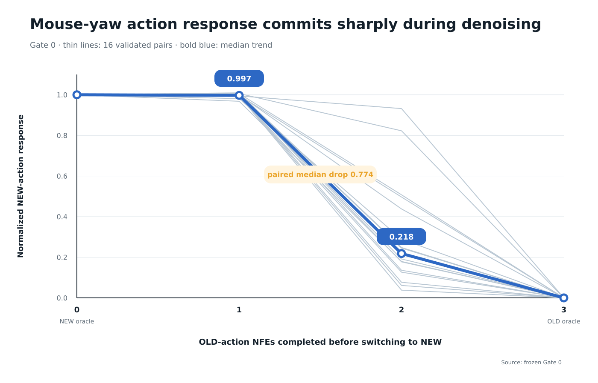
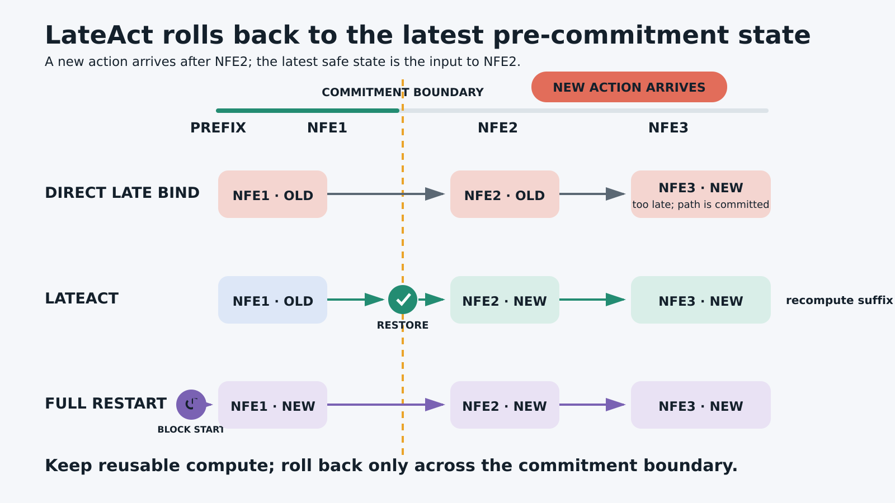
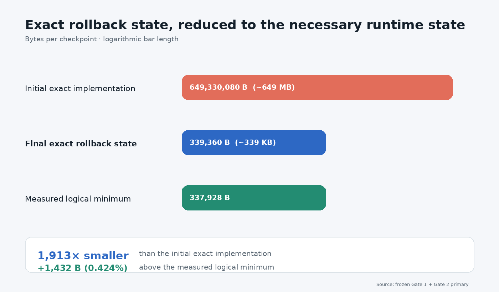

0.218 → 0.997
Median NEW-action response after late arrival
Interactive video world models
Commitment-Aware Asynchronous Control for Interactive Video World Models
LateAct identifies when a new action becomes committed during denoising and restores only the latest pre-commitment state, avoiding unnecessary full restart.
Representative validated case
0.218 → 0.997
Median NEW-action response after late arrival
11.93%
Lower mean latency vs full restart
339 KB
Exact rollback state
Problem
A video block is produced through iterative denoising, but a user's latest action may arrive between model evaluations. The serving policy must decide what computation remains reusable without leaving the rollout bound to stale control.
Wait for the current block to finish. No recomputation, but the new action cannot affect the active block.
Swap the action into the remaining evaluations. Fast, but ineffective once the trajectory has committed.
Regenerate the whole block under the new action. Recovers control while discarding reusable work.
Key observation
For validated Matrix-Game 2.0 mouse-yaw controls, one OLD-action NFE remains nearly fully plastic: the median normalized NEW-action response is 0.997. After two OLD-action NFEs, it falls to 0.218. This sharp operational transition defines the commitment boundary used by LateAct.

Method
Before commitment, LateAct binds the new action directly. After commitment, it restores the latest mutable pre-commitment state and recomputes only the affected suffix under the NEW action. The reusable prefix remains intact, avoiding a full block restart.

System result
The initial exact implementation retained approximately 649 MB of runtime state. The final checkpoint stores 339,360 bytes, only 1,432 bytes above the measured logical minimum of 337,928 bytes.
This is exact state preservation—not lossy compression. LateAct keeps only the mutable state necessary to resume at the commitment boundary instead of duplicating the full runtime state.

Results
The primary evidence progresses from measuring commitment, to testing minimal rollback, to fresh asynchronous serving contexts.
Gate 0
16/16 validated mouse-yaw scene-direction curves; median response drops from 0.997 after one OLD NFE to 0.218 after two.
Gate 1
Median late-action response recovers to 0.997; all 16/16 pairs improve and remain within 0.10 of full restart.
Gate 2
32 fresh contexts; 676/676 late arrivals within 0.10 of restart, 348/348 early arrivals with zero rollback, and 11.93% lower mean latency.
Scope and limitations
Haoran Li. “LateAct: Commitment-Aware Asynchronous Control for
Interactive Video World Models.” Technical report.